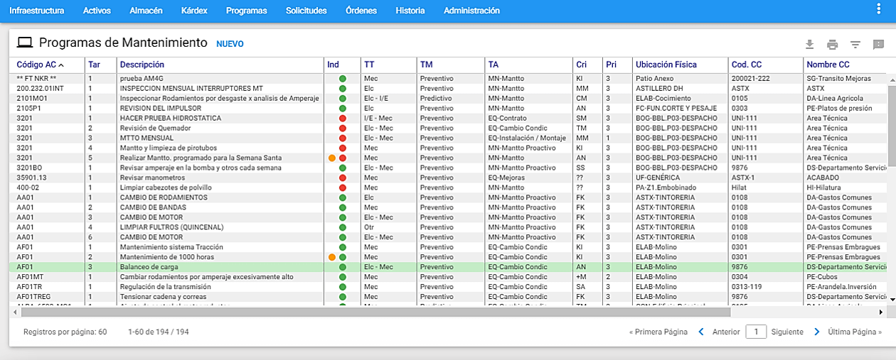
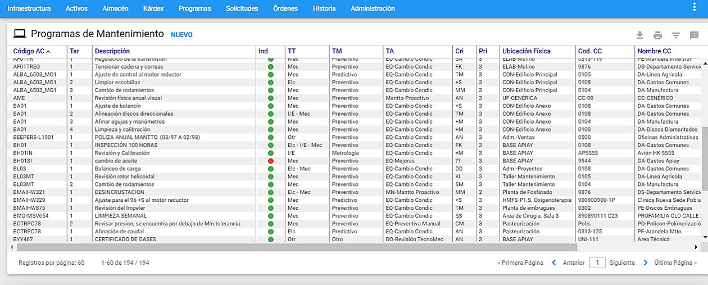

A través del Kárdex se realiza la actualización del archivo de repuestos, en todo lo concerniente a entradas, salidas y ajustes, manteniendo tal movimiento disponible para consultas o estudios especiales. Su dominio puede ser uno o varios de los Almacenes definidos en la compañía activa.
Una única transacción del Kárdex, mantiene consistencia integral entre tres tablas distintas: Repuestos, Órdenes de Trabajo y Kárdex. Esto significa que una transacción de entrada al almacén, registrada en el Kárdex, actualiza también el saldo en la tabla de repuestos, incrementándolo. Una transacción de salida del almacén, registrada en el Kárdex, actualiza el saldo en la tabla de repuestos, decrementándolo y al tiempo actualiza la tabla de Ordenes de Trabajo, cargando el consumo de tales repuestos.
Es una herramienta práctica cuando no se dispone en la Organización de un Sistema Corporativo de Almacén que administre los Insumos de Mantenimiento, los materiales y los Repuestos. En este caso el Kárdex de AM**, en conjunto con el módulo de Repuestos, pueden suplir tal necesidad e incluso otras alrededor del tema de inventarios, como por ejemplo Administrar el Inventario de Materia prima, de producto en proceso, de material de empaque, de útiles de Oficina y de Aseo y otros.
Pero también es muy útil cuando ya existe un Sistema externo dedicado a la administración del Inventario de Repuestos de la corporación, a través del cual se realiza toda gestión y movimiento de entradas y salidas. En este caso AM** debe enterarse del resultado de cada movimiento ejecutado a través del sistema externo. Para ello tal sistema externo debe poder entregar un archivo a manera de interface, en el que se comunique a AM: los saldos en existencia y el valor unitario vigente de cada repuesto, después de aquellos movimientos.
Es posible definir un gran número de conceptos de entrada y salida de artículos del almacén. Los Conceptos de Entrada son las operaciones por las cuales ingresan los repuestos al Almacén. Se puede registrar un número infinito de conceptos de entrada. Dentro de los conceptos de entrada existen algunos que se encuentran predefinidos. Aún así es posible definir cuantos sean requeridos y definir para cada uno sus requerimientos especiales. Por ejemplo, habrá conceptos de entrada que podrán exigir la información del Almacén desde donde proviene el repuesto, otros en cambio, podrán exigir el número de la Orden de Trabajo, cuando se trate de una entrada por devolución de un repuesto al Almacén, desde una Orden de Trabajo que lo solicitó y no lo utilizó.
Los Conceptos de Salida son las operaciones por las cuales se produce un retiro de los repuestos del Almacén. Se puede registrar un número infinito de conceptos de salida. Dentro de los conceptos de salida existen algunos que se encuentran predefinidos. Aún así, es posible definir cuantos sean requeridos y definir para cada uno sus requerimientos especiales. Por ejemplo habrá conceptos de salida que podrán exigir el número de la Orden de Trabajo cuando se trate de una salida de repuestos hacia esa Orden de Trabajo preexistente en AM Web.
El Kárdex trabaja además en consonancia con el método de valorización de inventarios más adecuado, entre las varias opciones: Promedio Ponderado y Costo del Último Ingreso, que se definen para cada Almacén. En el primer caso el costo unitario del código que
acaba de ingresar se calcula ponderando el número de unidades que ingresan a su respectivo costo unitario, con el número de unidades que existían previamente, a su costo unitario.
En el segundo caso el Costo Unitario del código que ingresa se convierte en el costo unitario de toda la existencia de ese código en el almacén. Este último esquema es valioso en muchos casos, por cuanto los presupuestos de materiales y repuestos pueden ser muy realistas, basados en costos recientes. Se debería usar cuando el Almacén del sistema AM We b no es contable en el sentido estricto de la palabra.
Se ha estructurado el módulo de Kárdex, para establecer su control a un nivel superior: el documento. En un mismo documento, de entradas, se reportan varios movimientos de entrada. De forma igual sucede con un documento de salidas. A partir de esta definición, se registra primero la información del documento, que será general para todos los movimientos asociados al mismo y luego se procede al registro de sus movimientos.
El módulo de Kárdex permite administrar de manera independiente los movimientos de cada uno de los almacenes creados en la Tabla de Almacenes (Infraestructura) y dependiendo del usuario que ingrese al AM tendrá sus propios permisos de administración para cada almacén.
Ventana Principal de Kárdex

Al sobreponer el puntero del mouse en el módulo de Kárdex, se listan los distintos almacenes creados en la tabla de Almacenes de la Infraestructura y cuando se elige un Almacén, el sistema muestra al lado izquierdo un check verde y en frente en azul, el aviso de Seleccionado.

A esta ventana se llega haciendo clic sobre la opción Kárdex del Menú Principal. A través de ella se ejecutan todas las funciones dedicadas a administrar en primer lugar los documentos y luego sus movimientos asociados. A continuación se ilustran las porciones que la componen.
Ventana Visor de Documentos de Kárdex

Desde esta ventana es posible observar los documentos de Kárdex existentes. Se listan todos o una selección o subgrupo de ellos. El conjunto de documentos de Kárdex disponible a ser desplegado se muestra a través de páginas. Es posible configurar el número de registros que se muestran por página desde el menú Administración en la opción “Valores por Defecto” en la pestaña General.
Al hacer clic sobre alguna de las Entradas del Visor el sistema responde mostrando su información en forma detallada, en una ventana llamada Ventana Detalle.
Los títulos en azul que encabezan las columnas son también botones que permiten ordenar la tabla, según el título seleccionado. Para elegir un registro de la tabla se da un clic del mouse sobre él o se desplaza el cursor con las teclas de desplazamiento.
Ventana Detalle de Documento de Kárdex
Al hacer clic sobre alguna de las Entradas del Visor el sistema responde mostrando su información en forma detallada, en una ventana llamada Ventana Detalle.

En la figura anterior se aprecia el conjunto de información que identifica a cada documento, se destaca en la pestaña siguiente, al lado derecho de ella, en azul, el número de registros de movimientos asociados a ese documento.
Al dar clic en la pestaña ** “Movimientos”**, se muestra la ventana Visor de Movimientos de Kárdex, con todos los registros de Movimiento contenidos dentro del Documento actualmente seleccionado, que cumplan con el criterio de subgrupo establecido.
A continuación se detallan los campos que componen el detalle de Documentos de Kárdex:
Almacén: Se muestra el Almacén desde el cual se moverán los repuestos relacionados en el Documento de Kárdex. No es modificable por el usuario.
Movimiento: Se elige tipo de movimiento a realizarse. Se listan tres tipos de movimiento por default: Entrada, Salida y Ajuste.
Tipo de Documento: Se elige el tipo de documento a relacionarse en el Documento. Se listan cuatro tipos de movimiento por default: Factura, Remisión, Salida de Almacén, Devolución al Almacén.
Documento: Se escribe aquí el código que se le asignará al Documento de Kárdex. El código que se le asigne puede ser el mismo número de la factura con la que se adquirieron los repuestos que se están moviendo o puede ser formado con la fecha y el tipo de Movimientos que contiene.
FF Documento: Es la fecha de creación del Documento de Kárdex. Puede ser modificado por el usuario, cuando se encuentre habilitado el valor por defecto “Modificar fecha de documento” de Kárdex en el módulo de Administración / Valores por Defecto / Kárdex. Si el valor por defecto “Modificar fecha del Documento” se encuentra deshabilitado, el campo se muestra bloqueado y no se puede modificar y corresponderá a la fecha del sistema.
OC: Aquí se registra el número de la orden de compra, sí es necesario o es posible diligenciar otro número de documento diferente a la factura o a otro.
% Descuento: Es posible registrar un porcentaje de descuento que aplique a ese Documento. El valor definido en este campo se mostrará automáticamente en el detalle del movimiento.
% IVA: Es posible registrar un porcentaje de IVA que aplique a ese Documento. El valor definido en este campo se mostrará automáticamente en el detalle del movimiento.
Documento Anexo: Se digita un número de documento puede ser el mismo número de la factura con la que se adquirieron los repuestos que se están moviendo o puede ser formado con la fecha y el tipo de Movimientos que contiene, con el fin de realizar consultas futuras.
Tercero / Proveedor: Se especifica un Tercero relacionado con el Documento. Puede ser por ejemplo el Proveedor de los repuestos relacionados en el Documento o la persona que autoriza el movimiento de los Repuestos contendidos en él.
CC: Se especifica el Centro de Costo al cual se van a cargar los costos de los Movimientos relacionados en el Documento.
Sub CC: Este campo siempre está bloqueado y muestra el Código Sub CC asociado al Centro de Costo elegido.
Comentarios: En este campo se pueden agregar observaciones e información complementaria del Documento de Kárdex. Tiene capacidad para soportar hasta 4000 caracteres.